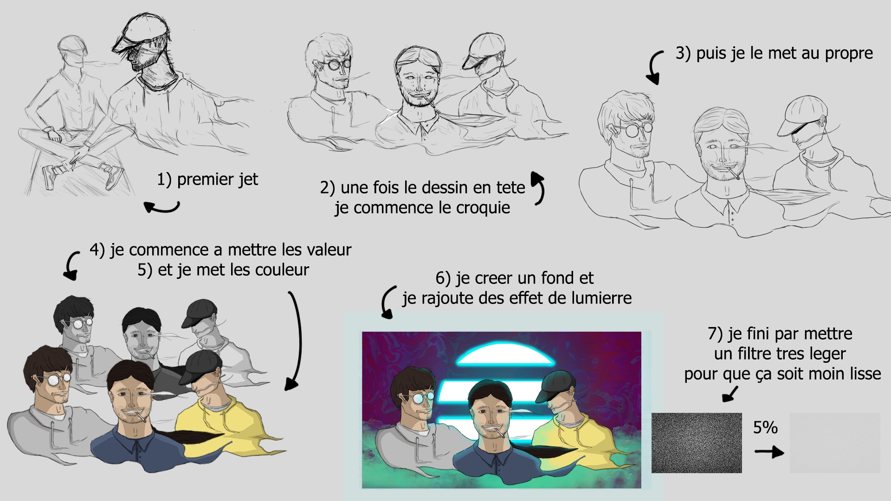

Valentin Braud
Bienvenue sur mon portfolio !
Bonjour, je me présente je suis Valentin BRAUD.
Depuis 2015 je me suis pris de passion pour le dessin, l’animation et le design.
J’ai commencé à faire mes premiers dessins qui ne ressemblaient pas à ce que je voulais c’est pour cela que je me suis donc orienté dans une formation Bac pro AMA (artisanat et métiers d’art).
J’ai beaucoup appris, les profs m’ont donné des conseils et m’ont permis de pouvoir m’améliorer très vite. J’ai commencé à ce moment-là à enfin faire ce qui me plaisait.
J’ai malheureusement été contraint d’arrêter cette formation qui pourtant me plaisait pour cause de problèmes personnels.
Je me suis donc réorienté pour effectuer de nouveau une seconde Bac pro mais cette fois, en SN (système numérique).
L’informatique est pour moi une passion complémentaire au design.
Début 2017, j’achète ma première tablette graphique afin de pouvoir effectuer des dessins sur un nouveau support et de pouvoir continuer à dessiner malgré ma formation actuelle qui n’était pas du tout dans ce domaine. Ce qui m’a d’ailleurs permis de devenir autodidacte très vite.
Fin 2018 à force de trainer sur internet, je tombe sur un stream de Anderlaxe. Et il devient pour moi en quelques streams, un modèle à suivre. Son style de dessin est totalement ce que je recherchais et ce qui me plais. Ce que je voulais faire depuis le début mais que je n’arrivais pas à retrouver.
2019 est l’année où j’ai découvert la programmation. J’ai effectué lors de ma formation bac pro, deux stages. Je les ai effectués chez une personne que je connais qui m’a fait découvrir le monde de la programmation. J’ai appris lors du premier stage à développer un jeu vidéo avec Unity. J’ai donc utilisé le langage C#. Lors du second stage, j’ai créé un site avec une base de données et un espace administrateur en HTML, CSS, PHP et MySQL.
J’ai tellement aimé que j’ai entièrement fait ce site tout seul. J’ai appris pour ce site le langage JavaScript pour pouvoir faire des animations.
Mes dessins :

Je vais faire un dessin par jour,
et ça commence le 11 mai !

Comment je fonctionne :
